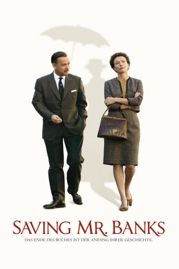
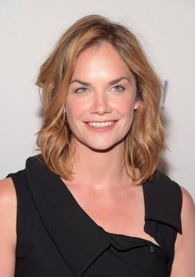

#1015 Saving Mr. Banks
Auszeichnungen: für 1 Oscars nominiert
 
 IMDB-Wertung: 7.5 / 10
IMDB-Wertung: 7.5 / 10  Metascore: 65
Metascore: 65 
In Saving Mr. Banks bemüht sich Walt Disney, der Autorin P.L. Travers die Erlaubnis abzuringen, ihn ihre Kinderbuchserie um das zauberhafte Kindermädchen Mary Poppins auf die Kinoleinwand zu bringen. Disney und Travers gelingt es erst nach zähen Verhandlungen die genauen Bedingungen der Adaption festzulegen. Dennoch soll sie den fertigen Film gehasst haben. Dies muss sich auch ihr Chauffeur Ralph anhören, der Travers während ihrer Promo-Tour zum Film durch Los Angeles chauffiert. Ihm vertraut sie die Geschichte ihrer Kindheit an, in der sie im australischen Queensland den Niedergang ihres Vaters miterleben musste. Ihr Vater, dem ihre Figur des Mr Banks nachempfunden ist, starb kurz bevor Walt Disney um die Erlaubnis zur Verfilmung bat.
Jahr: 2013
Dauer: 125 Minuten
FSK: 6
Land: England Studio: Walt Disney Studios Motion PicturesTonspuren: DTS - ,
Untertitel: Deutsch,
Auflösung: 1080p (1920x800) Größe: 8908 MB
Genre: Biographie, Komödie, Drama, Familie, Musik
Regisseur: John Lee Hancock
Drehbuch: Kelly Marcel, Sue Smith
Soundtrack: Thomas Newman
Darsteller:
 Emma Thompson als P.L. Travers
Emma Thompson als P.L. Travers Tom Hanks als Walt Disney
Tom Hanks als Walt Disney Colin Farrell als Travers Goff
Colin Farrell als Travers Goff-  Ruth Wilson als Margaret Goff
 Paul Giamatti als Ralph
Paul Giamatti als Ralph Bradley Whitford als Don DaGradi
Bradley Whitford als Don DaGradi B.J. Novak als Robert Sherman
B.J. Novak als Robert Sherman Jason Schwartzman als Richard Sherman
Jason Schwartzman als Richard Sherman Kathy Baker als Tommie
Kathy Baker als Tommie- Melanie Paxson als Dolly
- Andy McPhee als Mr. Belhatchett
 Rachel Griffiths als Aunt Ellie
Rachel Griffiths als Aunt Ellie Ronan Vibert als Diarmuid Russell
Ronan Vibert als Diarmuid Russell- Jerry Hauck als Premier Emcee
- Laura Waddell als Woman with Infant
- Fuschia Sumner als Flight Attendant
 David Ross Paterson als Doctor
David Ross Paterson als Doctor Michelle Arthur als Polly
Michelle Arthur als Polly- Bob Rusch als Doorman
- Paul Tassone als Refreshment Tent Man
- Luke Baines als Waiter
 Demetrius Grosse als Bartender
Demetrius Grosse als Bartender- Steven Cabral als Bank Clerk
- Kimberly D'Armond als Katie Nanna
- Mia Serafino als Young Woman
- Claire Bocking als Nanny Claire
 Dendrie Taylor als Lillian Disney
Dendrie Taylor als Lillian Disney- Christine Ames als Airline Stewardess , uncredited
 Hermione Baddeley als The Domestic , archive footage, uncredited
Hermione Baddeley als The Domestic , archive footage, uncredited- Jaeden Bettencourt als Young Child - 1906 , uncredited
- Melissa Bickerton als Mrs. Corry , uncredited
- Vincent M. Biscione als Premiere Guest , uncredited
- Eric Corbin als Movie Premier Guest , uncredited
- Mary Czerwinski als Disneyland Mother , uncredited
- Lynne Alana Delaney als Stylish Bar Patron , uncredited
- Cheryl Dent als Flight Attendant , uncredited
- Seth Di Marco als Cab Driver , uncredited
- Hal Dion als Banker #2 , uncredited
- Karen Dotrice als Jane Banks , archive footage, uncredited
- Alan Ehrlich als Applauding Australian Townsfolk , uncredited
- Patricia Garcia als Disneyland Attendee , uncredited
- Emilie Germain als Woman in Castle , uncredited
- Stephen Goodman als Premiere Guest , uncredited
- Alan Gray als Banker , uncredited
- Richard Halverson als Academy Awards Attendee , uncredited
- Jennifer Lana Harper als Woman at the Pool , uncredited
- Kevin Hawley als Allura Business Man , uncredited
- Tomas Johansson als Airline Passenger , uncredited
 Glynis Johns als Mrs. Banks , archive footage, uncredited
Glynis Johns als Mrs. Banks , archive footage, uncredited- Barbara Keegan als Flight Attendant , uncredited
Datei: X:\2013(N-Z)\Saving Mr. Banks (2013, FSK6, 1920x800).mkv seit 07.05.2015
Festplatte: HD 2013(I-Z)-2014(A-Z)
 Es gibt insgesamt 133 Filme in der Gruppe '2013(N-Z)'
Es gibt insgesamt 133 Filme in der Gruppe '2013(N-Z)'